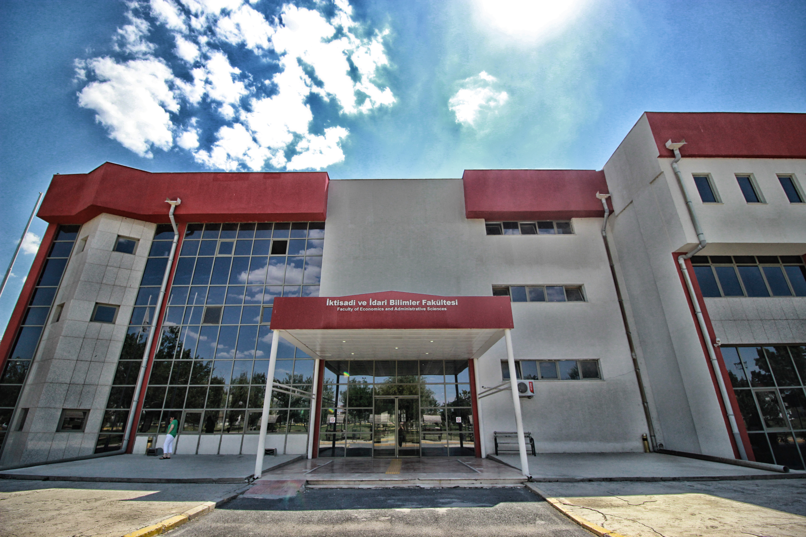

Afyon Kocatepe Üniversitesi İktisadi ve İdari Bilimler Fakültesi (İİBF) öğrencileri, özellikle ekonomi ve finans dersleri almaları sebebiyle "para yönetimi" konusunda bilinçli olsalar da, dijital dünyanın getirdiği risklere karşı en açık gruptur.
Yönetim Bilişim Sistemleri (YBS) öğrencileri olarak bizler, algoritmaların insan psikolojisini nasıl manipüle ettiğini derslerimizde (Veri Madenciliği, Web Tasarım) görüyoruz. Bu proje, teorik bilgimizi toplumsal bir sorunu çözmek için kullandığımız pratik bir adımdır.

Yönetim Bilişim Sistemleri öğrencileri olarak sanal bahis sitelerinin arka planını incelediğimizde şu teknik gerçekleri görüyoruz:
"Web Tasarım dersinde öğrendiğimiz arayüz hilelerini (Dark Patterns) bahis sitelerinde çok net görüyorum. 'Hemen Oyna' butonları parlak ve büyükken, 'Hesabı Kapat' butonları gizlenmiş durumda. Bu bir yazılım tuzağı."
"Finans derslerinde paranın zaman değerini görüyoruz ama arkadaşlarım kripto paradan veya bahisten 'bir gecede zengin olma' hayali kuruyor. İİBF kantininde en çok konuşulan konu maalesef iddaa oranları."
Kampüsümüzdeki gerçek verileri görmek ister misiniz?
Anket Sonuçlarını İncele →